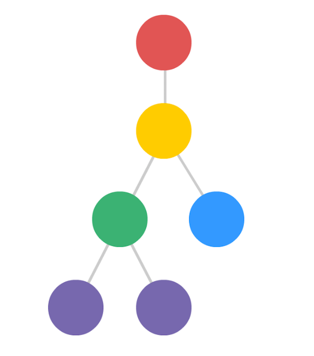
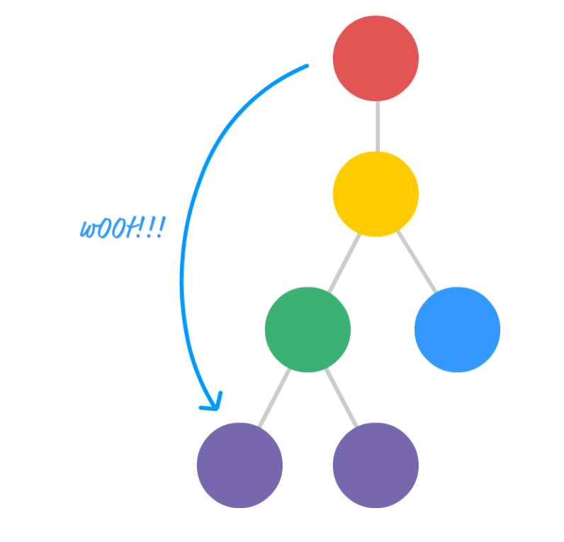
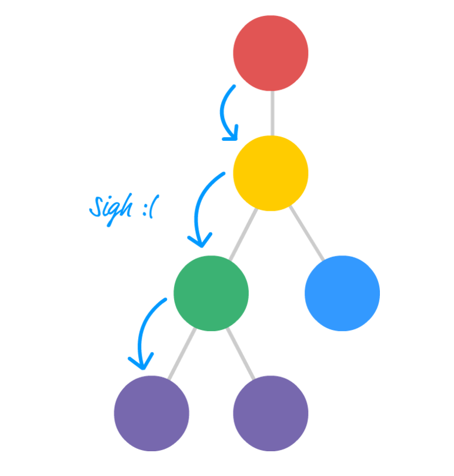

Welcome to Day 1 of ReactJS Bootcamp
Agenda
- Grunt
- Gulp
- Webpack
- Babel
- Some ES2015 Features
Build Tools
Workflow
Setup
- Scaffolding
- Downloading
Develop
- Watch
- Livereload
- Linting
Build
- Tests
- Compile
- Concat
- Uglify
- Deployment
Tooling is critical to maintain a productive workflow
Think
AUTOMATION
Work less,
Do more
Automation isn't being lazy
Its Called being efficient
Lets take a look at various build tools
Grunt
- Javascript task runner
- Focuses on configuration
- Does common tasks very well and very easily configurable when going down a happy path
- Picks up and drops files from src and dest options so each task opens file readers/writers
GruntFile.js
grunt.initConfig({
sass: {
dist: {
files: [{
src: 'dev/*.scss',
dest: '.tmp/styles',
expand: true,
ext: '.css'
}]
}
},
autoprefixer: {
dist: {
files: [{
expand: true,
cwd: '.tmp/styles',
src: '{,*/}*.css',
dest: 'css/styles'
}]
}
},
watch: {
styles: {
files: ['dev/*.scss'],
tasks: ['sass:dist', 'autoprefixer:dist']
}
}
});
grunt.registerTask('default', ['styles', 'watch']);
Gulp
- Focus on code
- Leverages streams for piping inbetween tasks
- Doesn't enforce much of anything. Just use code to wire up tasks and pipe information
Gulpfile.js
gulp.task('sass', function () {
gulp.src('dev/*.scss')
.pipe(sass())
.pipe(autoprefixer())
.pipe(gulp.dest('css/styles'));
});
gulp.task('default', function() {
gulp.run('sass');
gulp.watch('dev/*.scss', function() {
gulp.run('sass');
});
});
Grunt vs Gulp
How they deal with their automation tasks on the inside
Gulp uses Node streams while Grunt uses temp files.
Browserify
- Built to ship Node modules to browsers
- Manages JS only
- Uses transforms to modify code
- provides pre and post bundle callbacks
- Minimal config
tasks/browserify.js
module.exports = function(grunt, options) {
return {
dist: {
src: defaults.src,
dest: defaults.dest,
options: {
watch: false,
browserifyOptions: {
debug: false, //no sourcemaps
transform: ['reactify', 'uglifyify']
}
}
}
};
};
Webpack
- Built to be a browser solution with nodejs support
- Bundles all your assets and has loaders to make that easier - great for modularity
- Supports all module formats out of the box
- Complex setup with loaders and etc
- Nice hotloading functionality with its built in dev server
webpack.config.js
module.exports = {
context: path.join(__dirname, '../public'),
debug: DEBUG,
watch: DEBUG,
devtool: '#inline-source-map',
target: 'web',
entry: './scripts/index.js',
output: {
filename: 'bundle.js',
path: '/dist'
},
module: { //Notice the loaders for sass and jsx files
loaders: [
{ test: /\.jsx?$/, exclude: /node_modules/, loaders: ['babel-loader'] },
{ test: /\.scss$/, loaders: ['style', 'css', 'sass']}
]
}
}
Brunch
- Our solution for this bootcamp
- Small configs
- Three simple commands
- Productivity and happiness
Small configs
By being opinionated about your build pipeline, Brunch is able to provide a smooth and fast experience, and makes your config files take a drastic cut.
Three simple commands
It doesn't take much to get around with brunch:
brunch newto create a new projectbrunch buildto buildbrunch watchto live compile
Productivity and happiness
- NPM support
- source maps out-of-the-box
- fast from-zero builds
- incremental builds
- and more
Typical brunch config
module.exports = {
files: {
javascripts: {
joinTo: {
'vendor.js': /^(?!app)/,
'app.js': /^app/
}
},
stylesheets: {joinTo: 'app.css'}
},
plugins: {
babel: {presets: ['es2015', 'react']},
postcss: {processors: [require('autoprefixer')]}
}
};- Formerly 6to5 but now handles more than ES2015
- Transpiles ESNext Code
- Can transform jsx & hot loading transformations
- Very up to date and community driven
- Used as a pre-build step when writing ESNext in the browser environments
ES2015

Arrows =>
- Inspired by CoffeeScript
- Bound to outer this (have no context)
- Always Anonymous
- Cannot use new operator
- Don't have their own arguments object
Code
//Arrows
var evens = numbers.map(num => num % 2 === 0);
nums.map((x) => x * 2);
//or as a statement body
var specialNums = numbers.map(num => {
return doSomething(num);
});
// Lexical this
var person = {
_name: "Westin",
_friends: ["Not Justin", "Doug", "Brendan", "Igor"],
printFriends() {
this._friends.forEach(f =>
console.log(`${this._name} knows ${f}`));
}
}
Let
function() {
if(x) {
var foo = 3;
}
var baz = 1;
//foo and baz in same scope due to hoisting
}
function() {
if(x) {
let foo = 3; //only inside the conditional
}
var baz = 1;
//foo and baz NOT in same scope as foo is no longer hoisted
}
Destructuring Object
var people = [
{
name: 'Westin',
age: 25
}
];
people.forEach(({name, age}) => {
console.log(name + ":" + age)
});
let { first: f, last: l } = {first: 'westin', last: 'w'};
let [x, y] = ['a', 'b'];
let {length : len} = 'abc';
Destructuring Array
var [month, date, year] = [3, 14, 1977];
let x = 3;
let y = 4;
[x, y] = [y, x];
//ignore an index
var [a, ,b] = [1,2,3];
var doWork = function() {
return [1, 3, 2];
};
let [x, y, z] = doWork();
Default, Rest, Spread
Default Params
let f =(x, y=12, z=y) => {
return x + y;
}
f(3) == 15;
let [x=3, y] = []; // x = 3; y = undefined
Rest
- arguments object no real array
- rest parameters are arrays meaning can use map,filter,reduce,etc
- rest parameters are the params that haven't been named
function multiply(multiplier, ...theArgs) {
return theArgs.map(function (element) {
return multiplier * element;
});
}
Spread
function sum(x,y,z) {
return x + y + z;
}
total(1, 2, 3);
//before
total.apply(null, [1,2,3]);
//now
total(...[1,2,3]);
let [x,...y] = 'abc'; // x='a'; y=['b', 'c'];
Classes
- just some syntactic sugar for prototype
- we will have supers and constructors
class TodoModel {
constructor(storage) {
this.storage = storage;
}
create(title='') {
return this.storage.save({title, completed: false});
}
['h'+'ello' + 'world']() { //dynamic class properties
return 'Hello World';
}
};
class EnhancedTodoModel extends TodoModel {
constructor(storage) {
this.storage = storage;
}
create(title) {
console.log('Creating a new todo with title' + title)
super.create(title);
}
}
Modules
import name from "module-name";
import { member } from "module-name";
import {member as alias } from "module-name";
import { member1 , member2 } from "module-name";
export { myFunction }; // exports a function declared earlier
export const foo = Math.sqrt(2); // exports a constant
export default function() { console.log('default module method'); }
Can have both named and default exports
Default is really just another named export Default are favored however
export default function (obj) {...};
export function each(obj, iterator, context) {...};
export { each as forEach };
import _, { each } from 'lodash';
import myFunction , { each } from 'lodash';
Agenda
- History of JS Frameworks
- React as a view layer
- JSX
- Mounting component to DOM
- Simple Components
- Props
- Passing the Props
Evolution of JS Frameworks
Vanilla JS
In the beginning, there was just JavaScript and almost everyone was afraid to use it because of the inconsistent DOM APIs across different browsers which resulted in lots of bugs.
Jquery
DOM manipulation and AJAX calls became less risky by abstracting away the differences into one consistent API
1st Generation
Backbone JS
Backbone arrived and provided organization to that messy jQuery code
- Spine - clone of backbone
- JavaScriptMVC - clone of backbone
- Knockout
2nd Generation
Angular JS
AngularJS emerged with all the needed framework pieces in one box: data binding, routing, templating, persistence as well as a compelling testing story and a more declarative syntax.
2nd Generation
Ember JS
Ember was also built with similar features to AngularJS but a stronger router and more emphasis on URLs and not breaking the back button.
- Can Js - slimmed down version of JavaScriptMVC with data binding support
- Durandal - Merged with Angular
- Meteor JS
3rd Generation
- React JS
- Vue JS
- Polymer JS
React
Simply the view layer
React
according to Facebook
A JAVASCRIPT LIBRARY FOR BUILDING USER INTERFACES
- It's simple
- It's declarative
- It's composable
Components are your building blocks
- Self contained
- Modular
- Dynamic
How can we break this down into components?

Mount Component
import React from 'react'
import ReactDOM from 'react-dom'
import app from './components/App';
ReactDOM.render(
Go to codepen
JSX
XML like syntax- Render markup in your js code
- This makes sense with small modular components
- Babel can transpile JSX into plain old javascript
- You can very easily write your javascript logic alongside your presentation layer
React vs React DOM
- React and ReactDOM were only recently split into two different libraries
- ReactDOM is the glue between React and the DOM
- you will only use it for one single thing: mounting with ReactDOM.render()
- ReactDOM.findDOMNode() which you can use to gain direct access to a DOM element.
- If your app is "isomorphic", ReactDOM.renderToString() in your back-end code.
- You use React to define and create your elements, for lifecycle hooks, etc
What are PROPS?

Where is the code?
supply props
< Welcome name="Sara" />
access props
class Welcome extends React.Component {
render() {
return Hello, {this.props.name}
;
}
}
How will that look?
Like this!
Hello, Sara
Want to make something a little more complicated?
Try making it on your own. Here's a CodePen link for your reference
Let's try extracting components out of this
Passing Props
Complex component structure 
Passing Props all the way down 
Not so simple is it? 